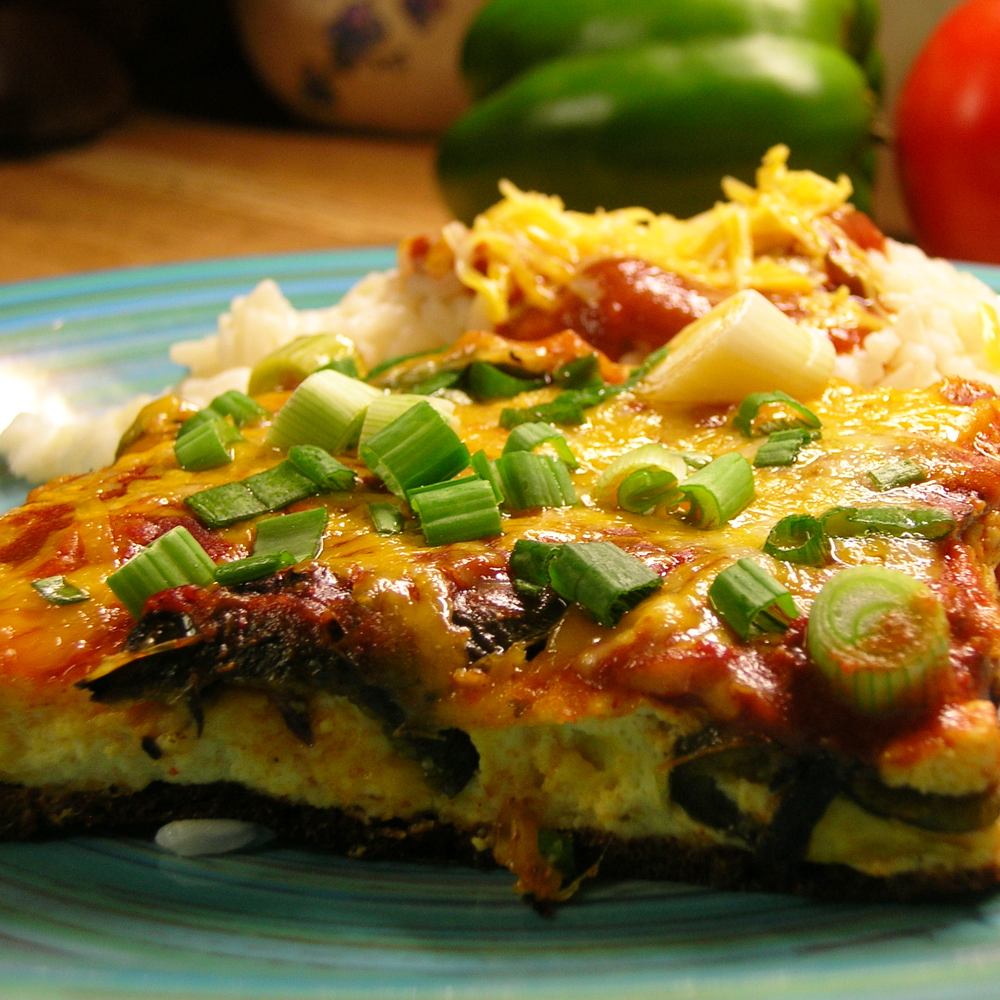

Chili Rellenos Casserole
This Chili Rellenos Casserole is very easy to prepare and is loaded with flavor. Great for a busy week night, and good enough for company.
Ingredients
- 2 (7 ounce) cans whole green chile peppers, drained
- 8 ounces Monterey Jack cheese, shredded
- 8 ounces Longhorn or Cheddar cheese, shredded
- 2 large eggs, or more to taste
- 1 (5 ounce) can evaporated milk
- 2 tablespoons all-purpose flour
- ½ cup milk (Optional)
- 1 (8 ounce) can tomato sauce
Steps
- Preheat oven to 350 degrees F (175 degrees C). Spray a 9x13-inch baking dish with cooking spray.
- Evenly layer 1 can chile peppers in the bottom of the baking dish. Sprinkle with half of the Jack and Cheddar cheeses, and cover with remaining chile peppers.
- In a bowl, mix together the eggs, evaporated milk, and flour. If too thick, feel free to add 1/2 cup regular milk. Pour over the top of the chilies.
- Bake in the preheated oven for 25 minutes. Remove from oven, pour tomato sauce evenly over the top, and continue baking another 15 minutes
- Sprinkle with remaining Jack and Cheddar cheeses, pop under the broiler for a few minutes, and serve.